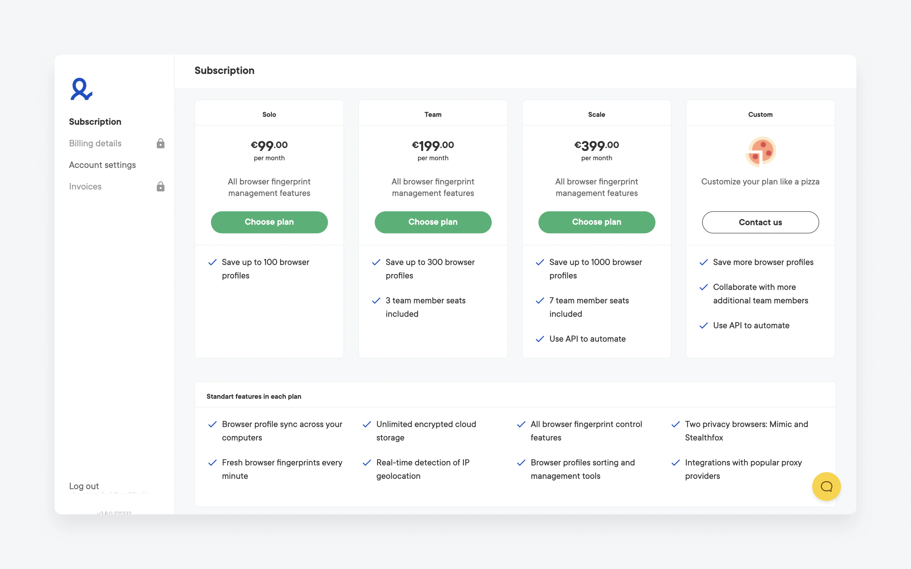
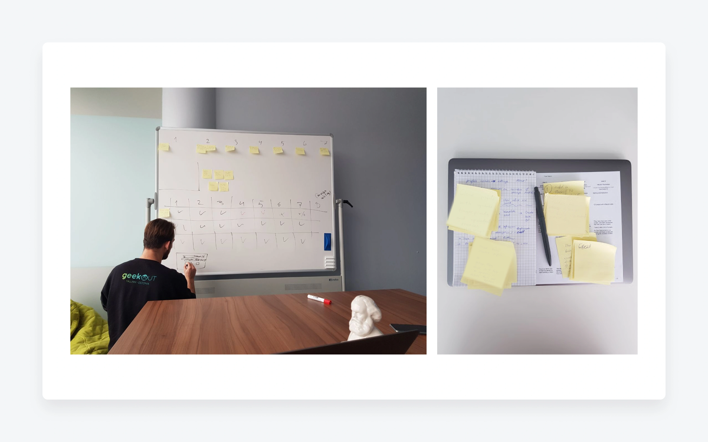
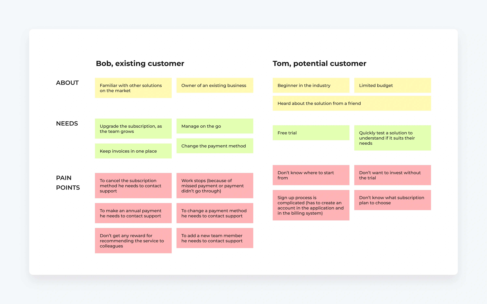
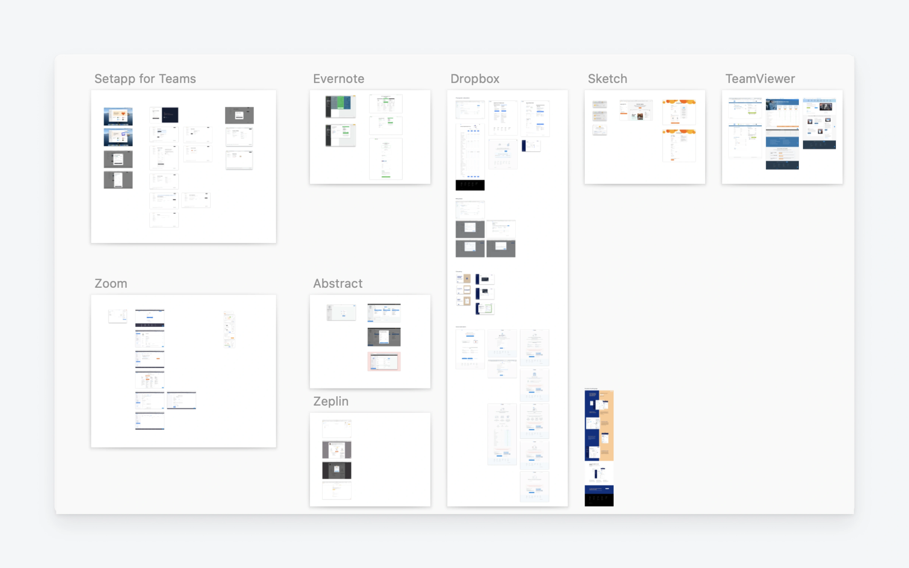
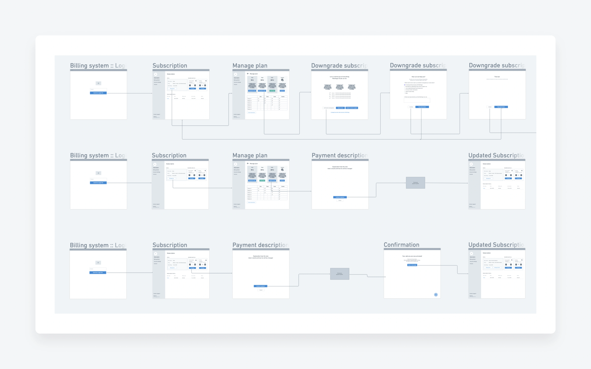
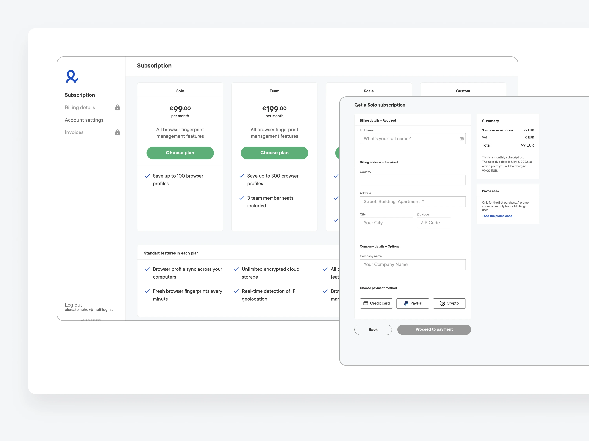
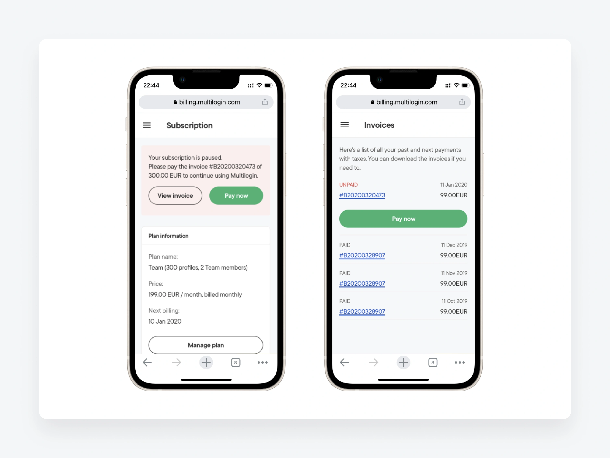
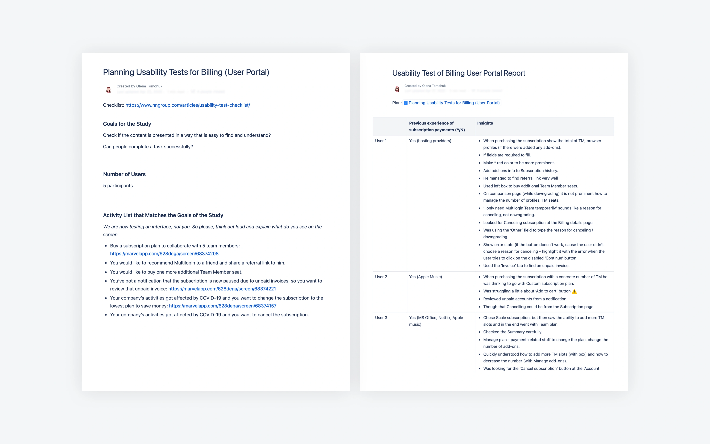

Billing portal for a SaaS platform
Replacing a third-party billing tool with a custom portal — one login, one flow, and the first-party data the business never had.
Users kept two separate accounts — one for the app, one for the third-party billing service — with no single registration flow and no analytics the company could see.
A custom-built billing system gives users one flow and one set of credentials — and gives the company the first-party data to become data-driven.

Gathering the real requirements
I worked with business stakeholders to define the system requirements, and pulled in the customer support team — the people closest to the complaints — for insights about where the existing billing panel broke down for users.

Two users, two jobs
From that knowledge-sharing and business analysis, I defined two personas — Bob, an existing customer managing a subscription, and Tom, a potential customer evaluating the product — so design decisions stayed anchored to real needs rather than assumptions.

How desktop SaaS handles billing
I studied how comparable desktop SaaS products let users manage subscriptions, update payment details, and find invoices — mapping the established patterns worth keeping and the gaps worth improving on.

Flows and wireframes
While the team wrote technical requirements, I built the user flows and wireframes. This made the future system visible early and forced the edge cases into the open before they became expensive — downgrades, failed payments, plan changes.

UI for desktop and mobile
I designed the interface from scratch for desktop and mobile resolutions, and left behind a UI kit so future billing work had a consistent foundation to build on.


Validating with real users
Before development started, I ran moderated usability testing with five current users, three flows per session. Each session was documented as a report, and we implemented the insights — fixing problems while they were still cheap to fix.

Outcome & takeaways
What shipped
- A responsive billing portal with MVP functionality
- Close, regular collaboration with engineering throughout
- Design QA run every sprint to protect the build quality
What I'd carry forward
- Test with every persona, not just the obvious one
- Don't skip the “minor” things — invoice design and copy matter, especially for non-native speakers
The throughline
This case is the argument for process: the win wasn't a clever screen, it was catching the edge cases in wireframes and the comprehension problems in testing — before a line of production code was written.